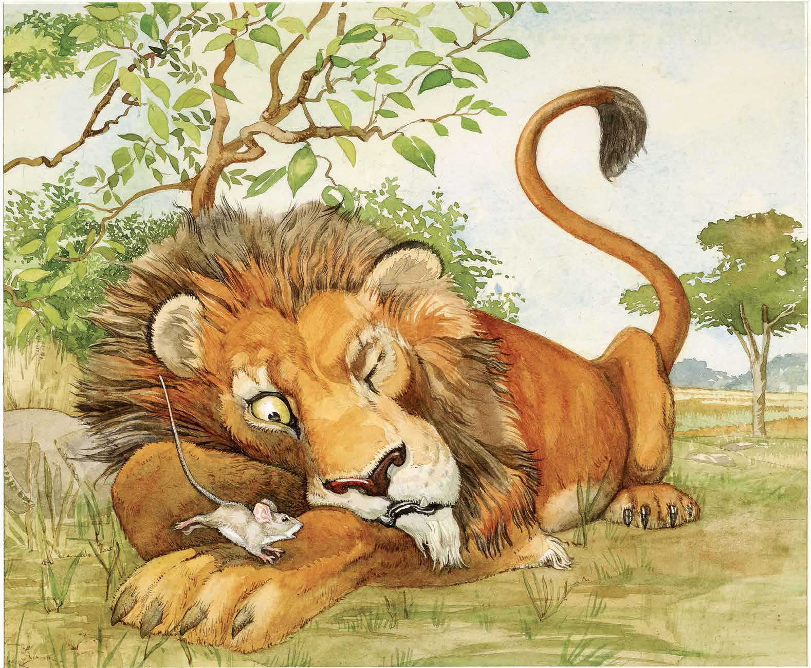
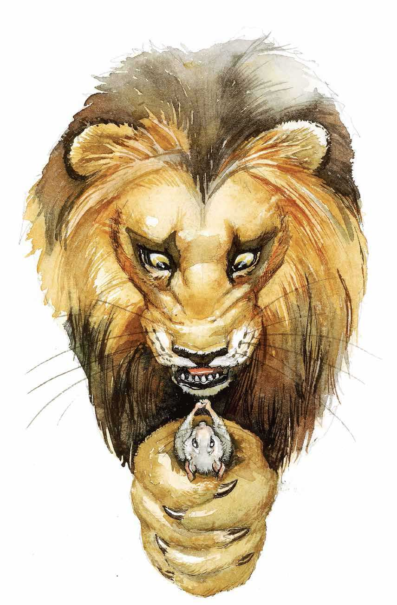
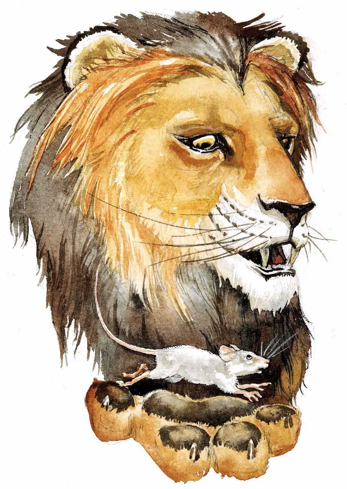
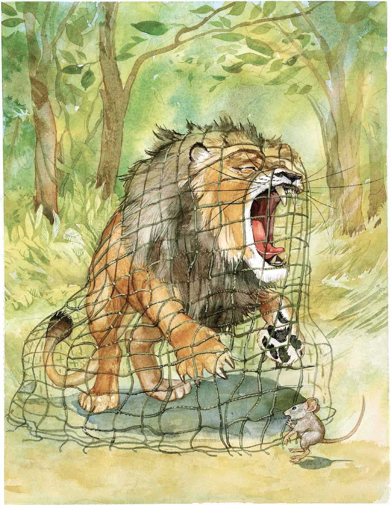
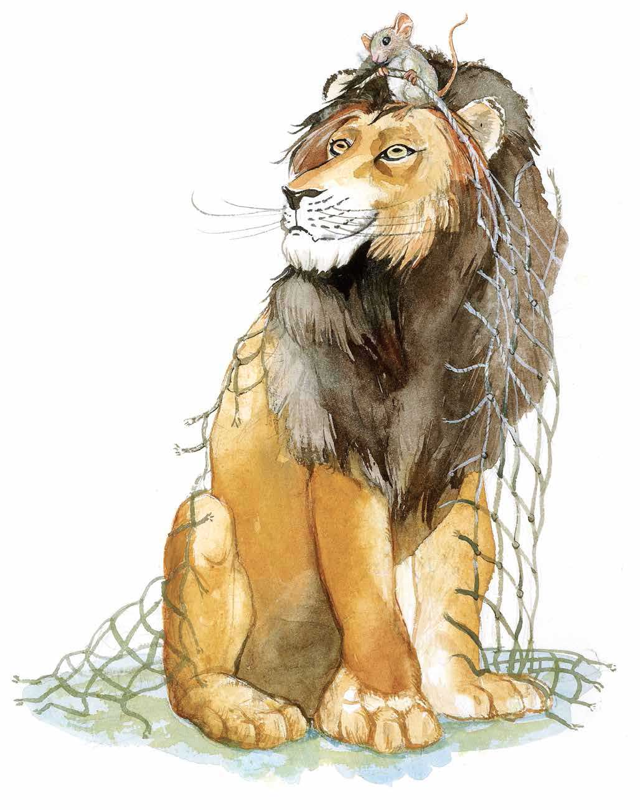

One day a little mouse was scampering about. The mouse accidently ran across the paw of a sleeping lion.
The angry lion awoke and captured the mouse in his great, big, furry paws.
The lion was just about to eat the mouse when the tiny creature cried out, “Please set me free. One day I will return your kindness.”
So the lion released the mouse.
A little while later, the mouse heard what sounded like angry roars. The mouse followed the sounds and discovered the lion trapped in a net made of ropes.
Though frightened, the mouse was determined to keep his promise.
Using his sharp teeth, the mouse made a hole in the net. And so the great lion was set free by the little mouse.
The moral of this story is: Friends who are little in size can still be great friends.